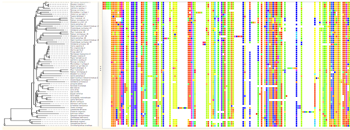
12 Comparative Genomics
When examining genomes, the analysis occurs at different levels to understand both the variations within a species for adaptation and the evolutionary differences between species.
Within a species, researchers focus on smaller-scale differences known as Single Nucleotide Polymorphisms (SNPs), which are tiny genetic variations at the single nucleotide level. These SNPs provide insights into population genetics, allowing scientists to study genetic diversity and adaptations within a population. On a larger scale, structural variants such as insertions, deletions, and rearrangements are explored. These structural variants are a part of pan-genome studies, which aim to uncover genetic diversity beyond the core genome of a species.
When comparing genomes between different species, the emphasis is on evolutionary analysis. This involves investigating the evolution of genes or gene families across species to comprehend their divergence or conservation. Additionally, researchers construct phylogenies or evolutionary trees to illustrate the relationships between species based on genetic similarities and differences.
Various methods are employed in comparing genomes. Synteny analysis focuses on examining the order and arrangement of genes along chromosomes, providing insights into how genetic material is conserved or rearranged across species. The study of gene content, involving gene families and their expansions or contractions, sheds light on the evolutionary changes in genetic functions. Moreover, genomic alignment is utilized to align entire genomes, revealing regions of high conservation (ultraconserved regions) or areas susceptible to recombination (recombination hotspots).
Molecular phylogeny is a method used to infer taxonomic relationships among species by analyzing genomic data. It involves several steps, including multiple sequence alignment and the estimation of gene trees.
Through multiple sequence alignment, researchers compare genetic sequences from different species to identify similarities and differences. This process helps in estimating gene trees, which illustrate the evolutionary relationships between different genes or genomic regions across species.
Species phylogeny, inferred from these gene trees, reflects mutations that have reached fixation in distinct species over evolutionary time. Fixed mutations are alterations in the genetic code that have become prevalent and stable within specific species populations, distinguishing them from other related species.
In the context of identifying conserved regions in proteins, molecular phylogeny contributes to recognizing areas within proteins that remain highly conserved across species. These conserved regions are important because they often perform essential functions and have persisted throughout evolutionary history due to their significance.
12.1 Substitution Rates and Molecular Clocks
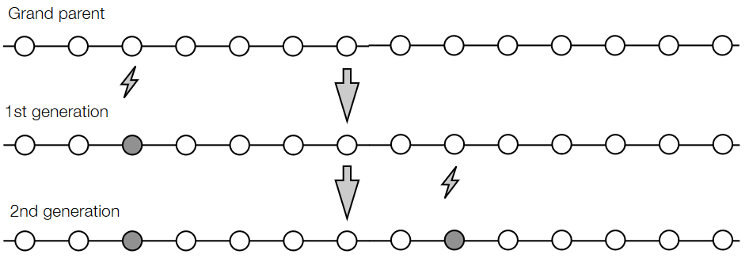
When an organism has a mutation, it’s usually passed down from their generation to the next (assuming that they have offspring).
12.1.1 Comparing Sequences
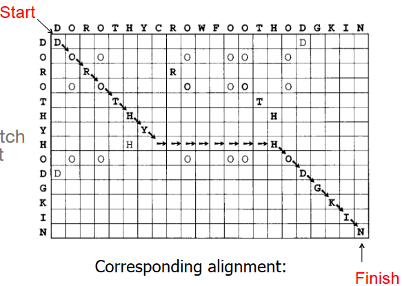
Dynamic programming algorithms, such as the Needleman-Wunsch algorithm, offer a global solution for pairwise sequence alignment, crucial in bioinformatics. Dotplots are graphical representations aiding in sequence alignments.
In constructing a dotplot:
Grid Representation: Imagine a grid where sequences are placed on the X and Y axes. The grid starts in the upper left corner and concludes at the lower right corner.
Movement Options: The algorithm allows three possible moves: right, down, or diagonally down-right. These movements within the grid help build the alignment.
Scoring Matches and Gaps: Passing through a cell containing matching letters elevates the alignment score, contributing to the similarity of the sequences. Conversely, moving through an empty cell introduces a gap, incurring a penalty that impacts the alignment score.
Dotplots visually demonstrate matches (dots) in the grid where sequences align. A dot is plotted when a cell in the grid signifies a match, indicating similar segments between the sequences. Dotplots assist in identifying regions of similarity, divergence, gaps, or duplications between sequences, aiding biologists in understanding genetic relationships and structural similarities between DNA or protein sequences.
However, one key thing to note about this approach is that it is an NP-complete problem.
12.1.2 Finding Local Optimas
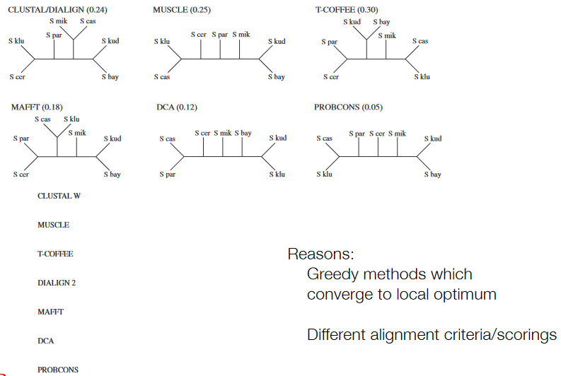
In the context of multiple sequence alignment (MSA), achieving tractable solutions often involves finding local optima through two main strategies: progressive alignment and iterative alignment. Progressive alignment methods, such as CLUSTAL, begin by conducting pairwise alignments for every sequence pair within the dataset. These pairwise alignments enable the calculation of sequence distances, establishing a measure of similarity or difference between sequences. Utilizing these distances, a guide tree, representing the evolutionary relationships among sequences, is estimated. Subsequently, the sequences are aligned following the order specified by this guide tree, aiming to progressively align sequences based on their inferred evolutionary relationships.
On the other hand, iterative alignment methods (e.g., MUSCLE, MAFFT, PRANK, PASTA) employ a different approach. These methods often build upon initial alignments, frequently starting from a solution generated by algorithms like CLUSTAL. Rather than focusing solely on pairwise alignments, iterative alignment algorithms proceed by calculating new pairwise distances from the resulting multiple sequence alignment. A new guide tree is then estimated based on these updated distances. Using this updated guide tree, sequences are aligned once again, leveraging the refined evolutionary insights to improve the accuracy of the multiple sequence alignment. This iterative process continues, refining the alignment based on updated distance estimations and guide trees to converge towards a more accurate solution.
12.1.2.1 Iterative Alignment Methods
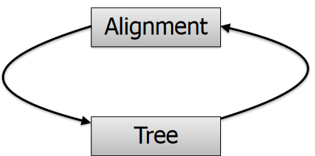
The iterative alignment approach operates under the assumption that if the correct evolutionary history between species were known, the alignment process would be easier to solve, and conversely, an accurate alignment would facilitate inferring the correct evolutionary relationships.
12.1.2.2 Estimating Phylogenies
Estimating phylogenies involves several steps to infer the evolutionary relationships among species:
Gene Selection: Begin by selecting a set of genes that are present as single copies in each species under study. These genes provide a reliable basis for comparing evolutionary relationships across species.
Multiple Sequence Alignment: Conduct individual multiple sequence alignments for each of the selected genes. This step involves aligning the sequences of these genes from different species to identify similarities and differences in their sequences.
Concatenation: Combine or concatenate the results obtained from the individual gene alignments. This concatenation generates a composite dataset that merges the aligned sequences from all the selected genes into a unified alignment.
Tree Estimation: Utilize the concatenated alignment data to estimate a phylogenetic tree. Various methods, such as maximum likelihood or Bayesian inference, can be employed to construct the tree that represents the evolutionary relationships among the species.
Alignment Refinement: Based on the estimated tree, refine the sequence alignments to improve accuracy. Adjust the sequence alignments according to the inferred evolutionary relationships depicted in the tree.
Iterative Process: Iteratively iterate between steps 4 and 5, refining the tree estimation and sequence alignment. Repeat this process until convergence, where the estimated tree and alignments become stable or reach a point of optimal accuracy, indicating a more reliable depiction of the species’ evolutionary history. This iterative approach allows for continuous refinement, enhancing the accuracy of both the phylogenetic tree and the sequence alignments used to infer it.
Empirically, the iterative methods of alignment and tree estimation usually converge, iteratively refining the alignment and evolutionary tree estimation process. This convergence suggests that these methods gradually improve alignment accuracy by iteratively refining the evolutionary relationships and sequence alignments.
Observationally, iterative methods tend to outperform progressive alignment strategies.
12.2 Synteny
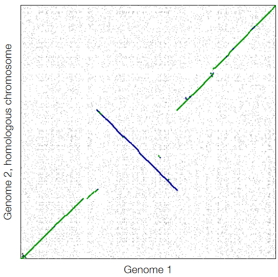
In the context of comparing genomic sequences, dot plots provide a visual representation of the similarities and differences between two genomes. The process begins by aligning the two genomic sequences, with approximate alignment methods like BLAT (a tool similar to BLAST, but faster with potentially less precise alignments).
When creating a dot plot for genome comparison:
x/y Axes: The x and y axes represent the gene order along the chromosomes of the two genomes being compared.
Dot Plot Representation: Each dot (or point) in the plot signifies a potential match between two corresponding gene pairs from the compared genomes. A dot is plotted when the level of similarity or match between these gene pairs surpasses a predefined threshold, usually based on a set BLAST (or similar alignment tool) threshold.
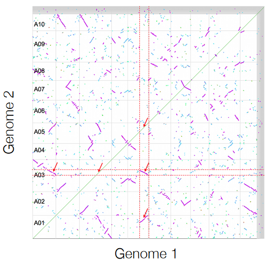
Synteny refers to the conservation of the same gene order between two or more genomes, indicating evolutionary relationships or shared ancestry. However, identifying the exact level of similarity in synteny can be challenging due to potential gaps or the insertion of new genes in the genomes being compared.
To overcome these challenges and accurately calculate gene-level synteny, researchers are developing specialized applications or tools. These tools incorporate predefined thresholds or criteria to assess the level of similarity in gene order between genomes. These thresholds account for variations such as gaps or the presence of newly inserted genes, enabling a more precise and nuanced evaluation of synteny at the gene level.
12.2.1 Synonymous versus Non-Synonymous Loci
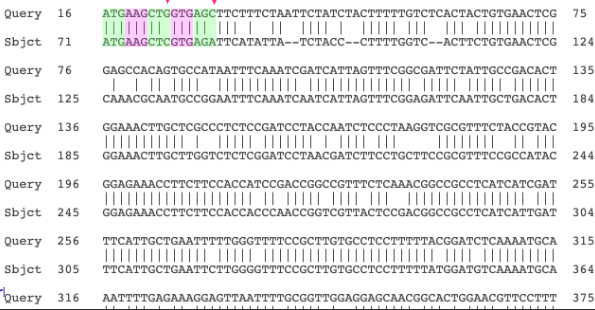
The comparison between synonymous (Ks) and non-synonymous (Kn) loci involves examining pairs of genes that are syntenic after alignment. These categories are based on the type of mutations observed between genes.
Synonymous Mutations (Ks): Synonymous mutations do not result in alterations to the protein sequence. These mutations typically occur in positions within the DNA sequence that code for amino acids but are situated in the third codon position. In the genetic code, alterations in the third position of a codon often don’t change the encoded amino acid due to redundancy (degeneracy) in the genetic code. Hence, mutations in these positions often do not affect the resulting protein sequence.
Non-Synonymous Mutations (Kn): Non-synonymous mutations, in contrast, lead to changes in the protein sequence. These mutations alter the DNA sequence in a way that results in a change in the encoded amino acid within the protein sequence. Consequently, these mutations impact the structure or function of the protein produced from the gene.
As a simple descriptive statistic, researchers often calculate the number of synonymous and non-synonymous mutations within these syntenic gene pairs. This comparison helps in understanding the selective pressures acting on genes or gene regions. The ratio of synonymous to non-synonymous mutations (Ks/Kn ratio) can also provide insights into the evolutionary constraints and adaptive changes affecting these genes or genomic regions across different species or populations.
12.2.1.1 Estimating Whole Genome Duplication Events
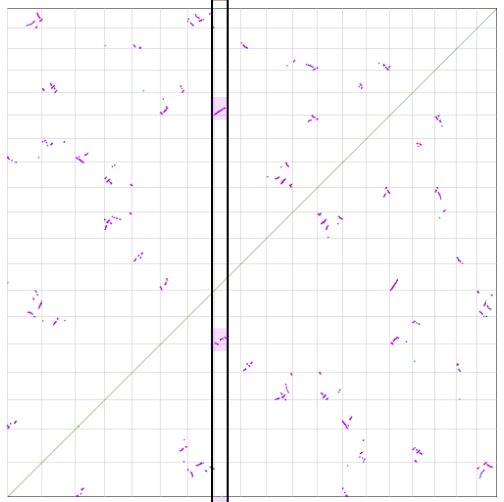
Synonymous substitution rate (Ks) can be a useful metric in estimating the timing of whole genome duplication events. When collecting Ks values from syntenic gene pairs across a genome and plotting them in a histogram, it can serve as a demonstration of a molecular clock.
Whole genome duplication events result in pairs of genes, stemming from a common ancestor. Subsequent to duplication, these gene pairs start accumulating mutations independently. Assuming that mutations accumulate at a relatively constant rate (as per the molecular clock hypothesis), genes derived from the same duplication event would show a similar Ks value distribution.
In this scenario, if all genes were duplicated at a single event, they have been accruing mutations since that common duplication, progressing at a uniform rate across the genome. Due to the stochastic nature of mutation accumulation, a distribution of Ks values around a central mean or median is expected. This distribution indicates the varying mutation rates across different gene pairs since their duplication, potentially revealing the timing of whole genome duplication events based on the spread or dispersion of Ks values. The wider the distribution, the more time has passed since the duplication event, leading to greater divergence and variability in Ks values among gene pairs.
12.2.1.2 Estimating Time of Species Divergence
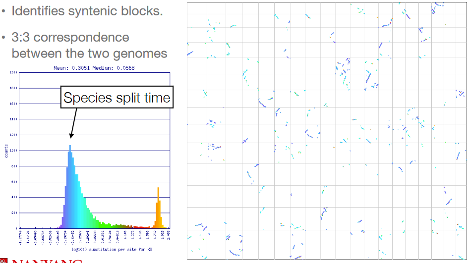
By identifying syntenic gene pairs between two distinct species, researchers can examine the synonymous substitution rate (Ks) for these gene pairs. The rationale behind this approach lies in the concept of coalescence to a common ancestor. If the two species being compared shared a common ancestor, genes in their genomes have been accumulating mutations independently since the time of their divergence.
The Ks values obtained from these syntenic gene pairs between the species serve as an indicator of the divergence time between the two lineages. Higher Ks values typically suggest a more extended period since the species’ divergence, signifying increased accumulation of synonymous mutations within these gene pairs. Conversely, lower Ks values indicate a more recent divergence between the species, with less time for synonymous mutations to accumulate in the identified gene pairs.
12.3 Gene Family Evolution
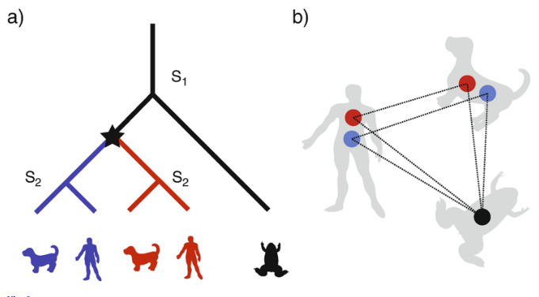
While aligning orthologous genes between species might seem straightforward and might generally reflect the species tree, the reality is often more complex. Prof. Jarkko also begins this section by listing some key terminologies:
- Homologs: these are genes that share a common origin throughout their evolution (e.g., there’s a common ancestor in an evolutionary tree that has this gene).
- Orthologs: these are similar genes or DNA sequences that pretty much performs the same function (e.g., two different genes in two different organisms that both encode some portion of the ribosomes for protein synthesis).
- Paralogs: these are homologs (in a single species) that arose solely via gene duplications.
12.3.1 Common Ancestors and Lineage Splits
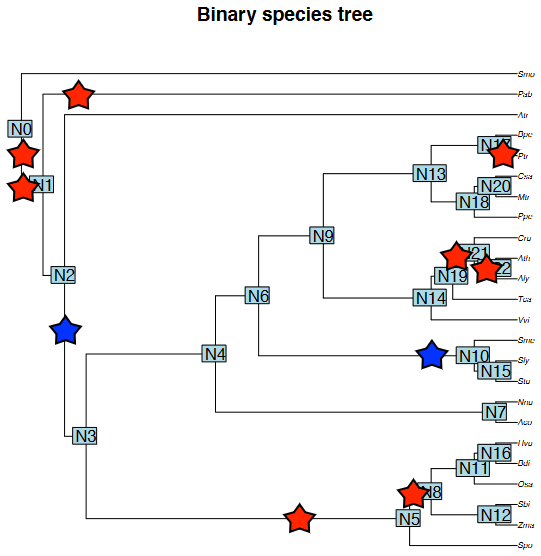
When we look at plants, we see that their evolutionary history are riddled with many instances of whole genome duplications and tandem duplications (likewise for their common ancestors).
12.3.2 Gene Tree Reconciliation
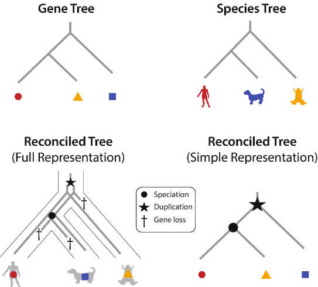
Gene tree reconciliation addresses the discrepancy that can arise between the gene tree (depicting the evolutionary relationships of genes) and the species tree (illustrating the evolutionary relationships among species). Due to various evolutionary events like gene duplications, losses, horizontal gene transfers, and evolutionary rate variations, gene trees may differ from the expected species tree.
This reconciliation process aims to find the most probable evolutionary history of genes given the known species tree. It involves computationally challenging tasks that seek to align or reconcile the gene tree with the species tree by identifying the minimum number of evolutionary events, such as gene duplications or losses, required to achieve congruence between the two trees.
The challenge lies in determining the optimal reconciliation scenario that minimizes the discrepancies between the gene tree and the species tree. This process is computationally intensive and typically involves algorithms that explore various possible scenarios of gene duplications, losses, and other events to find the fewest number of events necessary to reconcile the gene tree with the species tree.
12.4 Computational Tools for Comparing Gene Content Between Species
Orthogroups, also known as computational gene families, offer a more efficient and standardized method for defining gene families compared to manual approaches, which can be laborious and challenging due to the diverse nature of gene families.
Instead of manually delineating each gene family, researchers use computational methods to establish orthogroups. The process involves:
All vs All BLAST: Conducting a comprehensive sequence similarity search using BLAST (Basic Local Alignment Search Tool) for all genes in a given genome. This generates a similarity matrix that details the pairwise similarities between all genes in the dataset.
Markov Clustering: Utilizing the similarity matrix generated from BLAST results, researchers apply clustering algorithms such as Markov Clustering (MCL). MCL helps identify groups of genes that exhibit comparable sequence similarities based on the BLAST results. This algorithm partitions genes into clusters where genes within a cluster share significant sequence similarities with each other.
The outcome of this computational process is the formation of orthogroups or computational gene families. Each orthogroup consists of genes clustered together based on their similarities as indicated by BLAST results. Genes within the same orthogroup are considered to be part of the same gene family, sharing a level of sequence similarity that suggests their evolutionary relatedness.
12.4.1 STAG Method
The Species Tree with Average Gene (STAG) method utilized in OrthoFinder aims to construct a species tree based on orthogroups derived from gene trees. Here’s how it works:
Gene Tree Analysis: For each gene tree, STAG identifies the shortest distances between homologs in different species. It looks for the most closely related gene copies among species in these gene trees.
Species Homolog Selection: STAG retains only one gene copy per species, selecting the copy that exhibits the shortest distances to homologs in other species. This step intends to choose the gene copy that is most representative of its homologs across various species.
Tree Estimation: Using the selected gene copies and their distances, STAG constructs an estimated tree that reflects the evolutionary relationships between species based on these gene copies.
Consensus Species Tree: By amalgamating the individual estimated trees derived from numerous gene families, STAG creates a consensus species tree. This consensus tree represents an average or collective view of the evolutionary relationships among species.
The underlying assumption of the STAG method is that while mistakes might occur during the selection process of gene copies, leveraging information from a large collection of gene families can help average out these errors. This approach relies on the principle that errors or inaccuracies in the selection of individual gene copies are balanced out when considering a broad spectrum of gene families. Consequently, the consensus species tree derived from these collective gene families is expected to provide a more accurate representation of the evolutionary relationships among species.
12.4.2 Tree Rooting
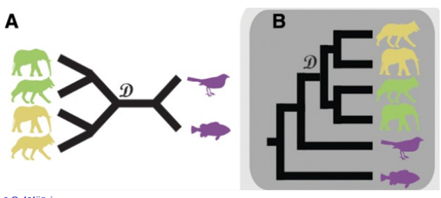
Rooting a phylogenetic tree involves determining the position of the most recent common ancestor (MRCA) and establishing the direction of evolution from that point. Several approaches exist for rooting trees:
Known Outgroup Species: Using a known outgroup species that is evolutionarily distant from the group under study. This outgroup is expected to share a common ancestor with the ingroup but diverged earlier, providing a basis for rooting the tree.
Gene Duplication Events (STRIDE): The STRIDE method, proposed by Emms and Kelly, leverages gene duplication events for tree rooting. It’s based on the principle that gene duplications are irreversible, meaning two genes cannot merge back into one. By identifying a root where the duplication events align with the timing constraints of evolution, this method seeks a root that best fits the pattern of gene duplication events across the tree.
The concept here is to pinpoint a root position on the phylogenetic tree where the inferred gene duplication events align with the expected evolutionary timeline. For instance, identifying a root where gene duplication events occur in a manner that is consistent with the known rates of evolution and divergence times among species.
12.4.3 Birth-Death Model
The birth-death model provides a formal probabilistic framework for estimating the turnover rates of gene families, offering insights into significantly expanded or contracted gene families within an evolutionary context.
Here’s an overview of the process:
Estimating Birth/Death Rates: Using the birth-death model within a phylogenetic framework, the consensus birth and death rates of gene families are estimated across the evolutionary tree. This estimation involves determining the rates at which new genes are gained (birth rate) and existing genes are lost (death rate) within different gene families over time.
Identifying Deviations from Consensus: Once the consensus birth and death rates are estimated, the model is used to identify gene families that significantly deviate from this general consensus. These deviations indicate gene families that have undergone remarkable expansions or contractions compared to the expected turnover rates derived from the overall evolutionary pattern.
This approach allows for a quantitative assessment of how gene families evolve across a phylogeny. It enables the identification of specific gene families that have experienced exceptional evolutionary dynamics, exhibiting substantial expansions or contractions beyond the typical rates observed across the evolutionary tree. This information offers valuable insights into the evolutionary forces driving the diversity and dynamics of gene families within different species or lineages.